1016A20 SINGLE CAM COVER - R + R AND REPLACE GASKET
- Path
- Procedures > 10 ENGINE UNIT > 1016 CYLINDER HEAD/S > 1016A CAM COVERS > 1016A20 SINGLE CAM COVER - R + R AND REPLACE GASKET
- Kind
- repair procedure (removal / refitting; the operation number is the code)
- Applies to
- all engines; all production periods
- Interactive page
- https://sloeber94.github.io/elrnDB-fDct/en/#/244000640
Applies to: engines: 2.0 16V; all production periods
 Removing
Removing
 Refitting
RefittingOp. 1048A31 RIGID PIPE CONNECTING AIR CLEANER TO INLET MANIFOLD RIGID PIPE R R
1. Undo the bolts and the nut (1a) fixing the tappet cover and move the electrical wiring (1b) aside.
2. Move the spark plug lead duct (2a) aside and remove the tappet cover (2b).
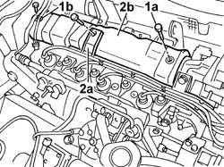
Applies to: engines: 2.0 16V; all production periods
Refitting
Removing- Fit a new gasket in place.
- Fit the tappet cover in place and tighten the fixing bolts and nut, checking the torque.
- Place the spark plug lead duct in position.
Op. 1048A31 RIGID PIPE CONNECTING AIR CLEANER TO INLET MANIFOLD RIGID PIPE R R
Applies to: engines: 2.3 JTD 16V; all production periods
Removing
Refitting- Disconnect the negative battery terminal.
See in Op. 1016A10
1. Disconnect the electrical connector for the timing sensor (1a) and undo the nut fixing the tappet cover to the cylinder head (1b) and remove the cover (1c).
 | Description | Connector |
|---|---|---|
1a | Timing sensor | K047 |
2. Remove the tappet cover gasket.
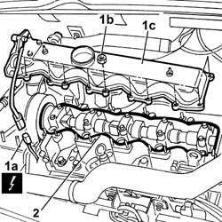
Applies to: engines: 2.3 JTD 16V; all production periods
Refitting
Removing- Replace the tappet cover gasket.
- Fit the tappet cover in position.
- Tighten the nuts to torque.
 | Value - daNm | Fastening | Component | Ø |
|---|---|---|---|---|
. | 1,0 | Nut | CAM COVER | - |
- Connect the electrical connection for the timing sensor.
| Description | Connector |
|---|---|---|
1a | Timing sensor | K047 |
See in Op. 1016A10
Op. 0010T11 ENGINE OIL CHECK LEVEL AND TOP UP
- Connect the negative battery terminal.
Applies to: engines: 2.0 JTD 8V; all production periods
Removing
RefittingSee in Op. 1048A21
Op. 1048B16 PIPES AND/OR ELBOW BETWEEN TURBOCHARGER AND THROTTLE CASING - R.R.
See in Op. 1080C17
1. Undo the bolts securing the power steering fluid reservoir to the mounting bracket.
2. Move the power assisted steering fluid reservoir away from the work area.
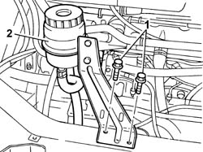
Applies to: engines: 2.0 JTD 8V; all production periods
1. Disconnect the vacuum pipe from the EGR valve.
2. Disconnect the electrical connection for the heater plugs control unit.
| Description | Connector |
|---|---|---|
2 | Heater plugs control unit | M015C |
3. Undo the fixing nuts (3a) and move the mounting bracket (3b) complete with heater plugs control unit aside.
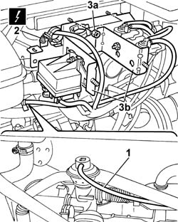
Applies to: engines: 2.0 JTD 8V; all production periods
1. Press the retaining spring (1a) and disconnect the electrical connection (1b) for the engine oil vapour heating resistance.
| Description | Connector |
|---|---|---|
1b | Oil vapour heating resistance | O007A |
2. Disconnect the engine oil vapour pipe from the air intake pipe between the filter and the turbocharger.
3. Remove the oil vapour pipe.
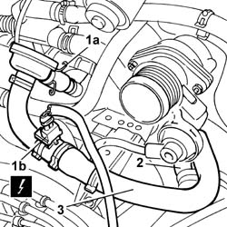
Applies to: engines: 2.0 JTD 8V; all production periods
- Disconnect the electrical connection for the timing sensor.
| Description | Connector |
|---|---|---|
. | Timing sensor | K047 |
1. Disconnect the recirculation pipe for the engine coolant reservoir.
2. Open the bands (2a) and release the heater water pipe (2b).
3. Disconnect the flexible recirculation pipe to the thermostat.
4. Undo the fixing bolts.
5. Remove the rigid water recirculation pipe.
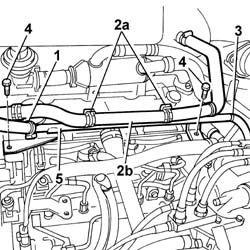
Applies to: engines: 2.0 JTD 8V; all production periods
1. Disconnect the separator engine oil vapour pipe.
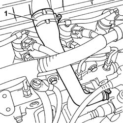
Applies to: engines: 2.0 JTD 8V; all production periods
1. Undo the fixing bolts.
2. Remove the bracket on the pressure pump mounting.
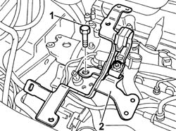
Applies to: engines: 2.0 JTD 8V; all production periods
1. Undo the bolts (1a) and move the bracket (1b) from the housing.
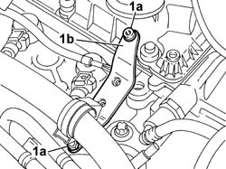
Applies to: engines: 2.0 JTD 8V; all production periods
1. Undo the fixing bolts in the order given below.
2. Remove the tappet cover.
- Remove the perimeter seal from the tappet cover.
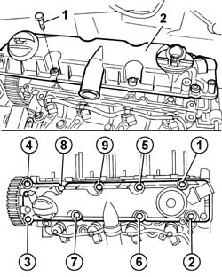
Applies to: engines: 2.0 JTD 8V; all production periods
Refitting
Removing- Fit the new perimeter seal on the tappet cover.
- Fit the tappet cover in its housing on the cylinder head.
1. Tighten the bolts fixing the tappet cover to torque in the order given below.
| Value - daNm | Fastening | Component | Ø |
|---|---|---|---|---|
. | 1,0 | Bolt | CAM COVER | M6 |
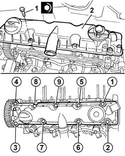
Applies to: engines: 2.0 JTD 8V; all production periods
- Tighten the bolts fixing the thermostat side bracket.
- Fit the bracket on the pressure pump mounting and tighten the fixing bolts.
- Connect the separator engine oil vapour pipe.
- Fit the rigid water recirculation pipe and tighten the fixing bolts.
- Connect the flexible recirculation pipe to the thermostat.
- Secure the heater water pipe to the bands on the rigid pipe.
- Connect the recirculation pipe for the engine coolant reservoir.
- Connect the electrical connection for the timing sensor.
| Description | Connector |
|---|---|---|
. | Timing sensor | K047 |
- Fit the oil vapour pipe.
- Connect the engine oil vapour pipe to the air intake pipe between the filter and the turbocharger.
- Connect the electrical connection for the engine oil vapour heating resistance.
| Description | Connector |
|---|---|---|
. | Oil vapour heating resistance | O007A |
- Fit the bracket, complete with solenoid valves and heater plugs control unit, and tighten the nuts fixing them to the bodyshell.
- Connect the electrical connection for the heater plugs control unit.
| Description | Connector |
|---|---|---|
. | Heater plugs control unit | M015C |
- Cconnect the vacuum pipe from the EGR valve.
- Fit the power assisted steering fluid reservoir and tighten the bolts fixing it to the crossmember.
See in Op. 1080C17
Op. 1048B16 PIPES AND/OR ELBOW BETWEEN TURBOCHARGER AND THROTTLE CASING - R.R.
See in Op. 1048A21
Applies to: engines: 2.8 JTD 8V; all production periods
Removing
Refitting- Disconnect the negative battery terminal.
See in Op. 1016A10
1. Disconnect the electrical connector for the timing sensor (1a) and undo the nut fixing the tappet cover to the cylinder head (1b) and remove the cover (1c).
| Description | Connector |
|---|---|---|
1a | Timing sensor | K047 |
2. Remove the tappet cover gasket.
Applies to: engines: 2.8 JTD 8V; all production periods
Refitting
Removing- Replace the tappet cover gasket.
- Fit the tappet cover in position.
- Tighten the nuts to torque.
| Value - daNm | Fastening | Component | Ø |
|---|---|---|---|---|
. | 1,0 | Nut | CAM COVER | - |
- Connect the electrical connection for the timing sensor.
| Description | Connector |
|---|---|---|
1a | Timing sensor | K047 |
See in Op. 1016A10
Op. 0010T11 ENGINE OIL CHECK LEVEL AND TOP UP
- Connect the negative battery terminal.